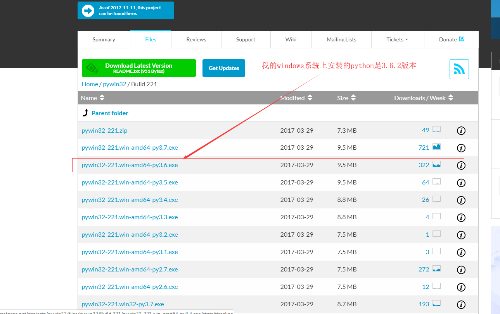
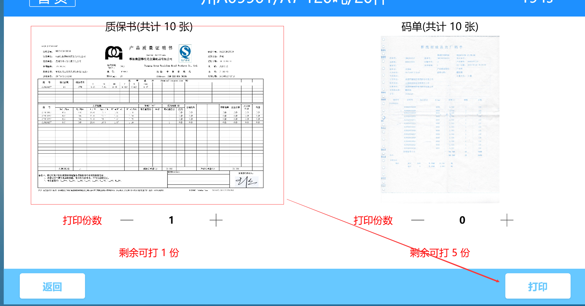

原文连接:https://www.cnblogs.com/wendj/p/10784401.html
介绍：通过pdf地址先将文件下载到本地，然后调用打印机打印，最后将下载的文件删除。
环境：windows系统。（windows64位）
windows系统中安装python3.6.2环境
资料：
O2S.Components.PDFRender4NET.dll（vs项目引用，这是在C#中调用打印机）
python3.6.2 for windows python-3.6.2-amd64-webinstall
在python环境中添加：pywin32-221.win-amd64-py3.6 和 GSPRINT文件（python环境中执行文件下载 打印 删除）
windows环境下安装python环境：
点击程序进行安装........
推荐安装教程：https://baijiahao.baidu.com/s?id=1606573927720991570&wfr=spider&for=pc
配置打印环境：
首先进入cmd环境导入requests模块
下载pywin32 官网 https://sourceforge.net/projects/pywin32/
找准对应版本.....

或者是我提供的下载地址（我的是3.6.2python版本）
接下来就是安装了.....
然后在python环境中去测试一下
解压

将GSPRINT文件夹与上面win32的安装模块文件放在一起，如下：
后面文件中对应地址：
首先从C#代码开始
界面预览：这个很简单，在wpf中可以写个button按钮事件即可

我直接贴出打印的核心代码：
/* 由于质保书后台接口给的是pdf下载地址，所以我的思路是 先下载到本地然后打印，打印完成后在删除文件
* 由于时间仓促：文件的下载及删除功能使用python来完成（这里也可以改为C#来写）
*
*/
try
{
// 1:文件下载
var result = PythonHelper.PdfDownload(this.model.ZhiBaoShu.DownloadUrl);
if (!result.Successed)
{
Dispatcher.Invoke(() =>
{
MessageBox.Show("pdf质保书下载失败，请联系管理员", "打印消息", MessageBoxButton.OK, MessageBoxImage.Stop);
LogHelper.LogInfo($"文件:【{this.model.ZhiBaoShu.DownloadUrl}】下载失败\r\n 错误：\r\n{result.Message}");
// 发生错误返回主页
UtilHelper.BackToMain(this, mainPage.stpBG, () => { BackToMain(); }, null);
});
}
Thread.Sleep(1000);
_savePath = result.Result.ToString();
// 2：打印下载pdf文件(python打印只能打印一份，还有打印样式未完善，所以还是用C#来调用打印)
result = PythonHelper.PdfPrint(_savePath, model.ZhiBaoShu.PrinterName);
// result = ph.PdfPrint(_savePath, model.ZhiBaoShu.PrinterName, (short)model.ZhiBaoShu.PrintNum);
if (!result.Successed)
{
Dispatcher.Invoke(() =>
{
MessageBox.Show("pdf质保书打印失败，请联系管理员", "打印消息", MessageBoxButton.OK, MessageBoxImage.Stop);
LogHelper.LogInfo($"文件:【{result.Result.ToString()}】打印失败\r\n 错误：\r\n{result.Message}");
// 发生错误返回主页
UtilHelper.BackToMain(this, mainPage.stpBG, () => { BackToMain(); }, null);
});
}
Thread.Sleep(1000);
//// 3：删除pdf文件
//result = PythonHelper.PdfDelete(_savePath);
//if (!result.Successed)
//{
// //MessageBox.Show("pdf质保书删除失败", "打印消息", MessageBoxButton.OK, MessageBoxImage.Stop);
// LogHelper.LogInfo($"文件:【{this.model.ZhiBaoShu.DownloadUrl}】删除失败\r\n 错误：\r\n{result.Message}");
// // 发生错误返回主页
// //UtilHelper.BackToMain(this, mainPage.stpBG, () => { BackToMain(); }, null);
// // 文件删除失败不代表打印失败，所以这里结果重置一下
// result.Successed = true;
//}
}
catch (Exception e)
{
}
pythonhelper.cs 文件 （代码未优化）
/// <summary>
/// 执行python文件
/// </summary>
public static class PythonHelper
{
/// <summary>
/// 程序debug目录文件路径
/// </summary>
private static string _binPath = System.AppDomain.CurrentDomain.SetupInformation.ApplicationBase;
/// <summary>
/// 保存本地pdf文件名
/// </summary>
private static string _pdfName = DateTime.Now.ToString("HHmmss") + ".pdf";
/// <summary>
/// 文件下载保存本地地址+文件名
/// </summary>
private static string _savePath = _binPath + "file\\" + _pdfName;
/// <summary>
/// pdf下载
/// </summary>
/// <param name="downloadurl">pdf下载地址</param>
/// <returns>返回保存文件地址</returns>
public static HandlingResult PdfDownload(string downloadurl)
{
// python文件地址 ，待处理python文件的路径，本例中放在debug文件夹下
string _pdfDownloadPy = _binPath + "python\\pdfdownload.py";
var result = new HandlingResult() { Successed = false };
try
{
// 拼接执行命令（方法传参）
ArrayList arrayList = new ArrayList();
arrayList.Add(downloadurl);
arrayList.Add(_savePath);
foreach (var param in arrayList)//添加参数
_pdfDownloadPy += " " + param;
// 执行设置
ProcessStartInfo start = new ProcessStartInfo();
start.FileName = "python";//执行python.exe
//执行python脚本的命令
start.Arguments = _pdfDownloadPy;
//设置运行python脚本的初始目录 这里注意：如果你的python脚本有文件操作，必须设置初始目录,python脚本所在的目录
start.WorkingDirectory = _binPath + "python\\";
start.UseShellExecute = false;
start.CreateNoWindow = true;
start.RedirectStandardOutput = true;
start.RedirectStandardError = true;
using (Process process = Process.Start(start))
{
// 异步获取命令行内容
process.BeginOutputReadLine();
// 为异步获取订阅事件
process.OutputDataReceived += new DataReceivedEventHandler((sender, e) =>
{
// 打印python脚本中的信息
LogHelper.LogInfo(e.Data);
//MessageBox.Show(e.Data);//e.Data 就是命令行打印的最后一行信息
});
}
result.Successed = true;
result.Result = _savePath;
}
catch (Exception e)
{
result.Successed = false;
result.Message = e.Message;
LogHelper.LogError(e);
}
return result;
}
/// <summary>
/// 删除pdf文件
/// </summary>
/// <param name="path">本地pdf文件全路径</param>
public static HandlingResult PdfDelete(string path)
{
string _pdfDeletePy = _binPath + "python\\pdfdelete.py";
var result = new HandlingResult() { Successed = true };
try
{
// 拼接执行命令（方法传参）
ArrayList arrayList = new ArrayList();
arrayList.Add(path);
foreach (var param in arrayList)//添加参数
_pdfDeletePy += " " + param;
// 执行设置
ProcessStartInfo start = new ProcessStartInfo();
start.FileName = "python";//执行python.exe
//执行python脚本的命令
start.Arguments = _pdfDeletePy;
//设置运行python脚本的初始目录 这里注意：如果你的python脚本有文件操作，必须设置初始目录,python脚本所在的目录
start.WorkingDirectory = _binPath + "python\\";
start.UseShellExecute = false;
start.CreateNoWindow = true;
start.RedirectStandardOutput = true;
start.RedirectStandardError = true;
using (Process process = Process.Start(start))
{
// 异步获取命令行内容
process.BeginOutputReadLine();
// 为异步获取订阅事件
process.OutputDataReceived += new DataReceivedEventHandler((sender, e) =>
{
// 打印python脚本中的信息
LogHelper.LogInfo(e.Data);
//MessageBox.Show(e.Data);//e.Data 就是命令行打印的最后一行信息
});
}
}
catch (Exception e)
{
result.Successed = false;
result.Message = e.Message;
}
return result;
}
/// <summary>
/// 打印pdf
/// </summary>
/// <param name="printPath">文件全路径</param>
/// <param name="printName">打印机名称</param>
public static HandlingResult PdfPrint(string printPath, string printName)
{
string _pdfPrint = _binPath + "python\\pdfprint.py";
var result = new HandlingResult() { Successed = true };
try
{
// 拼接执行命令（方法传参）
ArrayList arrayList = new ArrayList();
arrayList.Add(printPath);
arrayList.Add(printName);
foreach (var param in arrayList)//添加参数
_pdfPrint += " " + param;
// 执行设置
ProcessStartInfo start = new ProcessStartInfo();
start.FileName = "python";//执行python.exe
start.Arguments = _pdfPrint;//执行python脚本的命令
//设置运行python脚本的初始目录 这里注意：如果你的python脚本有文件操作，必须设置初始目录,python脚本所在的目录
start.WorkingDirectory = _binPath + "python\\";
start.UseShellExecute = false;
start.CreateNoWindow = true;
start.RedirectStandardOutput = true;
start.RedirectStandardError = true;
using (Process process = Process.Start(start))
{
// 异步获取命令行内容
process.BeginOutputReadLine();
// 为异步获取订阅事件
process.OutputDataReceived += new DataReceivedEventHandler((sender, e) =>
{
// 打印python脚本中的信息
LogHelper.LogInfo(e.Data);
//MessageBox.Show(e.Data);//e.Data 就是命令行打印的最后一行信息
});
}
}
catch (Exception e)
{
LogHelper.LogError(e);
result.Successed = false;
result.Message = e.Message;
}
return result;
}
}
第二种调用打印机方法：使用第三方O2S.Components.PDFRender4NET.dll文件调用打印机打印pdf
/// <summary>
/// 打印pdf文件
/// </summary>
/// <param name="pdfPath">文件全路径</param>
/// <param name="printName">打印机名称</param>
/// <param name="copies">打印份数</param>
/// <returns></returns>
public HandlingResult PdfPrint(string pdfPath, string printName, short copies = 1)
{
PDFFile file =null;
var result = new HandlingResult()
{
Successed = true,
};
try
{
file = PDFFile.Open(pdfPath);
PrinterSettings settings = new PrinterSettings();
System.Drawing.Printing.PrintDocument pd = new System.Drawing.Printing.PrintDocument();
settings.PrinterName = printName; // "NPI84FFAF (HP LaserJet MFP M436)"; // 打印机名称
settings.PrintToFile = false;
//设置纸张大小（可以不设置，取默认设置）3.90 in, 8.65 in
PaperSize ps = new PaperSize("test", 4, 9);
ps.RawKind = 9; //如果是自定义纸张，就要大于118，（A4值为9，详细纸张类型与值的对照请看http://msdn.microsoft.com/zh-tw/library/system.drawing.printing.papersize.rawkind(v=vs.85).aspx）
O2S.Components.PDFRender4NET.Printing.PDFPrintSettings pdfPrintSettings =
new O2S.Components.PDFRender4NET.Printing.PDFPrintSettings(settings);
pdfPrintSettings.PaperSize = ps;
pdfPrintSettings.PageScaling =
O2S.Components.PDFRender4NET.Printing.PageScaling.FitToPrinterMarginsProportional;
pdfPrintSettings.PrinterSettings.Copies = copies;
file.Print(pdfPrintSettings);
}
catch (Exception e)
{
LogHelper.LogError(e);
result.Successed = false;
result.Message = e.Message;
}
finally
{
file.Dispose();
LogHelper.LogInfo($"{pdfPath}---打印成功");
}
return result;
}
以上是C#部分代码，以下python脚本就比较简单了。
注：其实可以只写一个打印方法即可，为了流程看到清楚，所以一个操作一个方法文件。
1:根据地址下载pdf文件 pdfdownload.py
# -*- coding: utf-8 -*-
# 声明字符编码
# coding:utf-8
import os, sys
from requests import get
def dwnloadpfd(file_path, save_path):
'''
根据file_path地址下载文件保存到save_path路径中
:param file_path:下载地址
:param save_path: 保存地址
:return:True或False
'''
try:
head = {
"user-agent": "Mozilla/5.0 (Windows NT 10.0; WOW64) AppleWebKit/537.36 (KHTML, like Gecko) Chrome/53.0.2785.89 Safari/537.36"
}
response =get(file_path, headers=head).content
with open(save_path, 'wb') as f:
f.write(response)
print('%s--下载成功'%(save_path))
return save_path
except Exception as e:
print(e)
return None
if __name__ == "__main__":
#url = ""
#dwnloadpfd(url, "musics/1.pdf")
# 接收参数
dwnloadpfd(sys.argv[1], sys.argv[2])
2：打印pdf文件：pdfprint.py
# -*- coding: utf-8 -*-
# 声明字符编码
# coding:utf-8
import os, sys
import win32api
import win32print
import json
from handlingresult import handlingresult
GHOSTSCRIPT_PATH = "C:\\Program Files\\gs\\gs9.27\\bin\\gswin64.exe"
GSPRINT_PATH = "C:\\Program Files\\GSPRINT\\gsprint.exe"
def pdfprint(full_file_name, print_name=win32print.GetDefaultPrinter()):
'''
根据指定的打印机打印pdf文件
:param full_file_name:文件全路径
:param print_name:打印机名称（默认打印机）
:return:
'''
result = handlingresult()
try:
# portraint:纵向 landscape：横向
win32api.ShellExecute(
0,
'open',
GSPRINT_PATH,
'-ghostscript "' + GHOSTSCRIPT_PATH + '" -landscape -printer "' + print_name + '" "' + full_file_name + '"',
'.',
0
)
result.Message = '%s---打印成功' % (full_file_name)
result.Result = None
result.Successed = True
except Exception as e:
result.Message = '%s---打印异常：\n %s' % (full_file_name, str(e))
result.Result = None
result.Successed = False
js = json.dumps(result, default=lambda obj: obj.__dict__, sort_keys=True, indent=4)
return js
if __name__ == "__main__":
path ="D:\\1.pdf" #"E:\\开发项目\\学习项目\\Python\\MusicDownLoad\\musics\\1.pdf"
name = "NPIE091D5 (HP LaserJet MFP M227fdw)" # win32print.GetDefaultPrinter() # "NPI84FFAF (HP LaserJet MFP M436)" #
print(pdfprint(path, name))
# len(sys.argv)
# print(sys.argv[1]) # 文件路径
# print(sys.argv[2:]) # 打印机名称
# name = ' '.join(sys.argv[2:])
# print(name)
# # 打印机名称中有可能有空格
# print(pdfprint(sys.argv[1], name))
3：打印完成后即可删除文件 pdfdelete.py
# -*- coding: utf-8 -*-
# 声明字符编码
# coding:utf-8
import os, sys
def pdfdelete(full_path):
'''
根据文件全路径地址删除
:param full_path:文件路径
:return:True或False
'''
try:
if (os.path.exists(full_path)):
os.remove(full_path)
print(full_path + '---删除成功')
return True
else:
print(full_path + '---删除文件不存在')
return False
except Exception as e:
print(str(e))
return False
if __name__ == "__main__":
pdfdelete(sys.argv[1])
补充：获取打印机状态
# -*- coding: utf-8 -*-
# 声明字符编码
# coding:utf-8
import os, sys
import win32api
import win32print
import json
from handlingresult import handlingresult
GHOSTSCRIPT_PATH = "C:\\Program Files\\gs\\gs9.27\\bin\\gswin64.exe"
GSPRINT_PATH = "C:\\Program Files\\GSPRINT\\gsprint.exe"
# 详细参考：https://docs.microsoft.com/en-us/openspecs/windows_protocols/ms-rprn/1625e9d9-29e4-48f4-b83d-3bd0fdaea787
# 对应：win32api 最上面有
PRINTER_STATUE_STR = {
"2": "打印机处于错误状态",
"4096": "打印机无法打印",
"262144": "打印机没有碳粉",
"128": "打印机处于脱机状态",
"2097152": "打印机内存不足",
"524288": "打印机无法打印当前页面",
"8": "纸张卡在打印机中",
"16": "打印机缺纸",
"64": "打印机有一个未指定的纸张问题",
"1": "打印机暂停",
"131072": "打印机墨粉不足",
"1048576": "打印机出现错误"
}
def printer_status_code(printer_name):
'''
根据打印机名称获取状态
:param printer_name:
:return:
'''
result = handlingresult()
try:
hPrinter = win32print.OpenPrinter(printer_name)
dic = win32print.GetPrinter(hPrinter, 2)
stuta_int = dic.get('Status', 0)# 获取状态值
result.Result = stuta_int
stuta = PRINTER_STATUE_STR.get(str(stuta_int), None)
if stuta == None:
result.Message = '打印机状态：%s：\n %s' % (printer_name, result.Result)
result.Successed = True
else:
result.Message = '打印机状态：%s：\n %s' % (printer_name, stuta)
result.Successed = False
except Exception as e:
result.Message = '打印机获取状态异常：%s：\n %s' % (printer_name, str(e))
result.Result = None
result.Successed = False
js = json.dumps(result, default=lambda obj: obj.__dict__, sort_keys=True, indent=4)
return js
if __name__ == "__main__":
name = ' '.join(sys.argv[1:])
print(printer_status_code(printer_name=name))
# code = printer_status_code(
# "Brother Color Leg Type1 Class Driver") # Brother Color Leg Type1 Class Driver HP LaserJet MFP M436 PCL-6 NPI84FFAF (HP LaserJet MFP M436)
# print(code)
注：上面python调用打印机进行打印的份数这些设置后续有待完善。（打印份数可以循环调用打印即可）